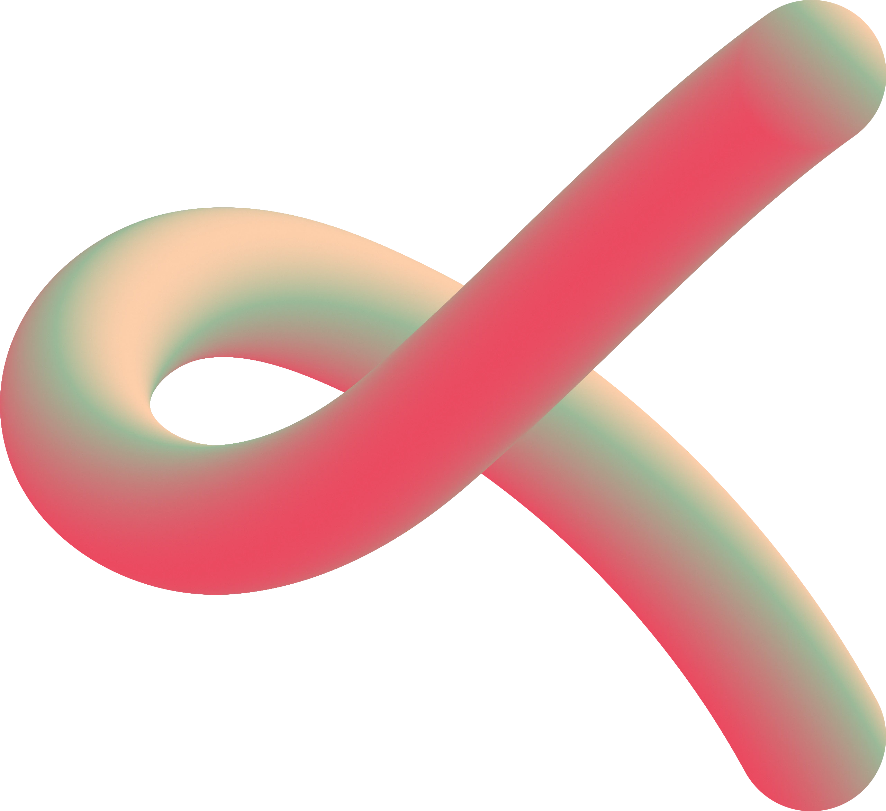
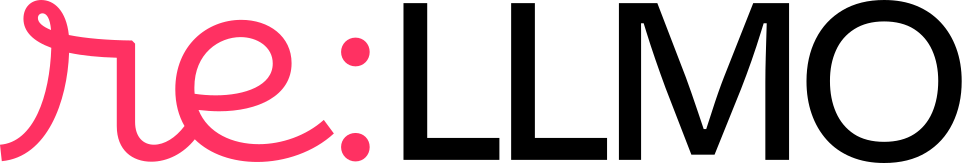
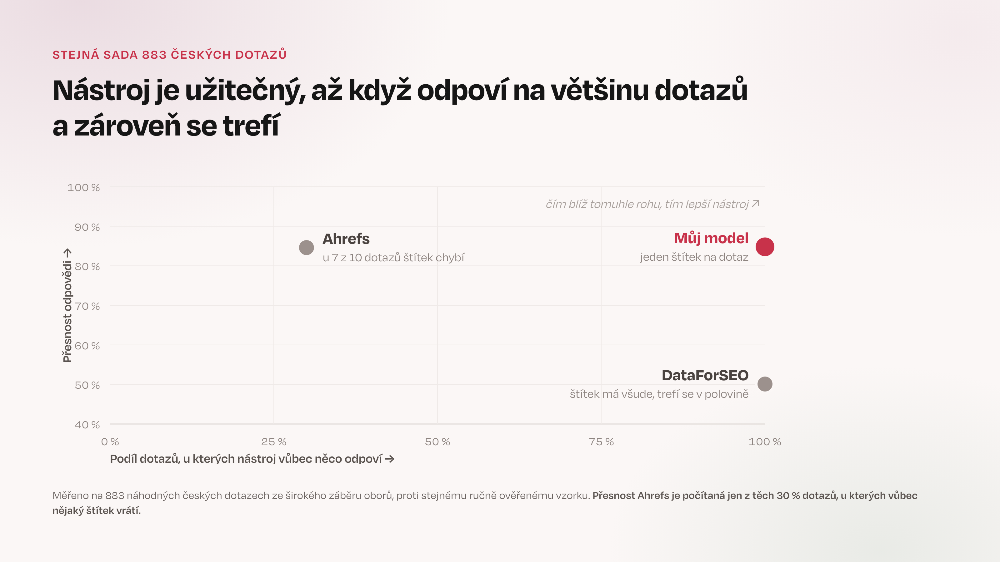
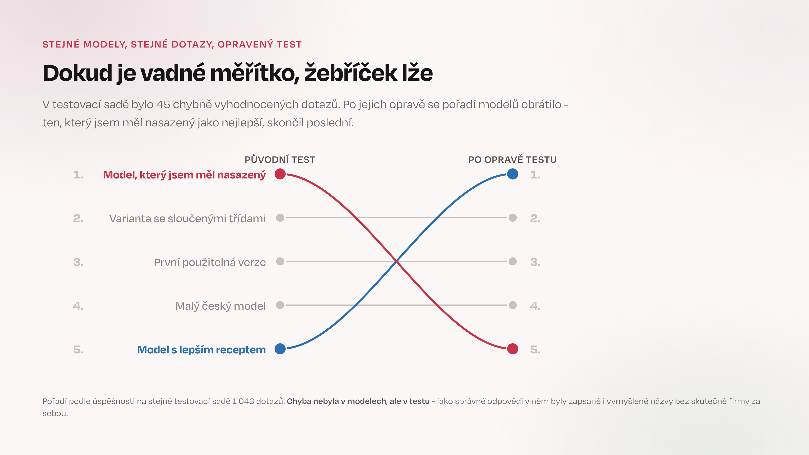

Od nuly k sadě fungujících automatizací.
Lukáš Kostka · re:LLMO a Effectix
Na konci školení si seznam společně projdeme.
Šest přání z přihlášek, bez jmen. Každé z nich dnes někde potkáš — u některých řekneme rovnou, kde.
Ukázka 2 a 3. Crawl projde pěti analytiky, Search Console dvěma automatizacemi.
Search Console, GA4, reklamní účty. Skript stáhne a sečte, model napíše výklad.
Audit viditelnosti v AI chatbotech rozebereme zevnitř.
Celý druhý blok. Postup v osmi krocích a cvičení.
Oboje je skill. Rozdíl je jen v tom, odkud si bere data.
Otázka, na kterou má Blok 2 odpověď: prompt, který se má opakovat, patří do skillu.
| Čas | Blok | Co se děje |
|---|---|---|
| 9:00 | 0 · Start | instalace pluginu školení, /skoleni-start |
| 9:25 | 1 · Jak to celé funguje | teorie a čtyři ukázky na plátně |
| 10:25 | Pauza | — |
| 10:40 | 2 · Vlastní automatizace | postup v osmi krocích, cvičení, zabalení a sdílení |
| 11:40 | Pauza s občerstvením | — |
| 12:05 | 3 · Vlastní model, více zdrojů, výhled | klasifikátor záměru, reporty, agenti |
| 12:50 | Závěr | co si odnášíš, první týden, zpětná vazba |
| 13:30 | Konec | — |
Když se zasekneš, zvedni ruku. Nečekej, až se problém zbytečně protáhne.
Každý pojem uvidíš hned poté, co zazní. Nemusíš stíhat spouštět totéž u sebe.
Můžeš si to pouštět souběžně, nebo jen koukat a zkusit doma. Obojí je v pořádku.
Nastaví prostředí a provede tě stavbou vlastní automatizace. Zůstane ti i po školení.
Slidy se značkou k dohledání jsou hustší a na čtení. Některé projdeme, jiné ne — ale máš je všechny.
Terminál vždy otevřeš v nějaké složce. Claude Code pracuje s tou, ve které ho spustíš. Nic mimo ni sám neotevře.
| Příkaz | Co udělá |
|---|---|
| pwd | Vypíše, ve které složce zrovna jsi. |
| ls | Vypíše, co v ní je. |
| cd nazev | Přejde do složky. cd .. o úroveň výš, cd ~ domů. |
| claude | Spustí Claude Code v aktuální složce. |
Cestu nemusíš psát. Napiš cd, mezeru, a přetáhni složku myší do okna terminálu.
Ne plocha, ne Stažené soubory. Claude Code si do pracovní složky ukládá kontext i výstupy — a příště na ně naváže.
Na Windows totéž, jen bez vlnovky: cd $HOME\automatizace-muj-web.
| Vznikne | Co to je |
|---|---|
| CLAUDE.md | Kontext, který se načte při každém startu. |
| .gitignore | Co se nikdy nemá dostat na GitHub. |
| .claude/skills/ | Tvoje vlastní skilly pro tuhle složku. |
| .skoleni/ | Stav dnešního průchodu. |
Složky začínající tečkou Finder skrývá. Zobrazíš je zkratkou Cmd+Shift+tečka.
Příkaz z e-mailu přidá marketplace re:LLMO a plugin školení. Pak restartuj Claude Code a napiš /skoleni-start.
/skoleni-start doběhl a v pracovní složce máš CLAUDE.md.
Otevři /plugin a podívej se, co všechno se nainstalovalo.
Zvedni ruku. Klíč najdeš v e-mailu i v tištěných podkladech.
Při instalaci ses setkal se třemi prvky Claude Code. Dopoledne je rozebereme.
Katalog, ze kterého instaluješ pluginy. Instalace proběhne jedním příkazem bez klonování repozitářů.
Sdružuje skilly, subagenty a nastavení. Instaluje se a aktualizuje jako celek.
Slash command začíná lomítkem. Spouštíš ho přímo v Claude Code.
/help vypíše všechny dostupné příkazy včetně těch z pluginů.Když někde narazíš na npx skills add, je to zastaralý postup. Dnešní cesta je marketplace a claude plugin install.
PATH.claude.claude: command not found po instalaci znamená staré okno terminálu, ne chybu instalace.
Na Pro a Max startuje v auto režimu: akce posuzuje druhý model, ne ty. Nečekej dotaz u každého příkazu — přijde jen tam, kde kontrola neprojde.
| Režim | Co běží bez ptaní |
|---|---|
| auto ⏵⏵ auto mode on | Akce posuzuje druhý model. Na Pro a Max výchozí. |
| plan ⏸ plan mode on | Jen čtení a průzkum. Nic nezmění, dokud plán neschválíš. |
| manual ⏸ manual mode on | Nic. Ptá se na úpravy, příkazy i síť. |
| accept edits ⏵⏵ accept edits on | Úpravy souborů. Na příkazy se ptá. |
| Odpověď | Platí pro |
|---|---|
| Ano | jednu tuhle akci. Když si nejsi jistý, tohle. |
| Ano, a příště se neptej | tenhle typ akce v téhle složce |
| Ne | tuhle akci. Claude to zkusí jinak. |
| Ne, a řekni proč | tuhle akci. Nasměruješ ho. |
Do plan mode se dostaneš přes Shift+Tab, nebo jednorázově tím, že prompt začneš /plan. Povolení se ukládá do složky; odebereš je přes /permissions.
Žádné přihlašování, žádné účty. Všechno, co dnes uvidíš na plátně, si můžeš pustit doma, až budeš mít přístupy po ruce.
| Hláška | Co to je | Co udělat |
|---|---|---|
| claude: command not found | Staré okno terminálu. | Zavři okno, otevři nové. |
| brew: command not found | Chybí dva řádky v ~/.zprofile. | Doplň je, viz referenční slide o instalaci gh. |
| Permission denied | Firemní notebook bez práv. | Nezkoušej znovu. Napiš IT a pokračuj. |
Příkaz /skoleni-start se nenabízí | Plugin se načte až po restartu. | Ukonči Claude Code a spusť ho znovu. |
| superpowers se nenainstaloval | Firemní síť blokuje GitHub. | Zkus z mobilního hotspotu. Cvičení jde i bez něj, pomaleji. |
Podrobněji v /skoleni-napoveda — funguje i za tři týdny.
Slovník a čtyři ukázky. Každý pojem uvidíš běžet hned poté, co zazní.
Rozdíl není v inteligenci modelu. Je v tom, kolik práce musíš odklikat ty.
Claude Code nepracuje jako chat — jedna otázka, jedna odpověď. Běží ve smyčce, dokud úkol není hotový.
Zadání a kontext: soubory, pravidla, dosavadní postup.
Co je další krok. Plán průběžně upravuje podle výsledků.
Zavolá nástroj, spustí skript, upraví soubor. Když si není jistý, zeptá se tě.
Přečte výsledek a vrací se ke kroku 02. Dokud není hotovo.
Proto běh trvá minuty, ne vteřiny. A proto každé kolo spotřebuje tokeny — smyčka pokaždé znovu čte, co se stalo.
Jedna věta, žádný účet, žádný klíč. Sleduj smyčku z minulého slidu v praxi.
Potřebuje jen doménu, žádný účet. Koho pustit dovnitř, má někdo rozhodnout vědomě.
Rohlik.cz: robots.txt v pořádku, HTTP odpověď v pořádku. A přesto:
Bot, který nevykresluje JavaScript, tohle nevidí. A z kontroly robots.txt to nevyleze.
Recept v Markdownu. Říká, co udělat, kdy a v jakém pořadí. Model dědí z konverzace.
Jeden skill = jedna dovednost. Třeba měsíční report ze Search Console. Data ale skill nedodává — na to je MCP server.
Dodavatel surovin. Skill je recept, MCP server nosí data a nástroje, ze kterých se vaří.
Search Console ti dá dotazy, DataForSEO pozice v SERPu, GA4 chování na webu. Pokud má nástroj API, jde nad ním MCP server postavit.
Kuchařka. Zabalí skilly, subagenty, příkazy a napojení na MCP servery. Instaluje a aktualizuje se jako celek.
Plugin školení, který máš od rána, je přesně tohle.
Kolega s vlastním, čistým kontextem. Dostane zadání, odpracuje ho a vrátí výsledek.
Drží postup a rozděluje práci. Dřinu nedělá sám.
Vlastní zadání, omezené nástroje, čistý kontext. Nezahltí hlavní vlákno.
Vrátí shrnutí, ne celý myšlenkový pochod. Hlavní kontext zůstane čistý.
Skill si vlastní subagenty nadefinovat neumí. Plugin ano — složka agents/ z minulého slidu.
Každý subagent může běžet na jiném modelu. Platíš jen za to, co dává smysl.
Sběr a parsování dat. Běží jich několik naráz, jeden na URL nebo dotaz. Levné a rychlé.
Klasifikace, posouzení, příprava podkladů. Rozumný poměr ceny a kvality.
Úsudek, syntéza, finální doporučení. Tady se nešetří.
V našem pluginu content-decay sbírá data Haiku, analýzu dělá Sonnet a finální doporučení píše Opus — to jde ke klientovi.
Hotový crawl ze Screaming Frogu projde pluginem sf-analysis. Nejdřív otevřeme složku pluginu, pak ho pustíme.
agents/. U každého subagenta je napsané, co dělá a na jakém modelu běží. Tohle je ta dělba práce z minulého slidu.scripts/. Crawl se načte do lokální databáze skriptem. Model surová data nikdy nevidí.Export ze Screaming Frogu se rozdělí mezi specializované subagenty. Každý se dívá z jiného úhlu, výsledky se skládají do jednoho reportu.
Na vstupu stačí CSV exporty z crawlu — na ty licenci na Screaming Frog nepotřebuješ. Umí i porovnání dvou crawlů, třeba jako kontrolu po migraci.
Stojí na placených datech. Ukážeme, jak je postavené.
Rozebereme ho v Bloku 2 zevnitř — jako příklad, jak se automatizace staví.
| Pořadí | Co | Proč zrovna tohle |
|---|---|---|
| 1 | Stránky, které nejdou indexovat | Cokoli dalšího je zbytečné, když stránka není v indexu. |
| 2 | Řetězce a smyčky přesměrování | Nejčastější škoda po migraci. Bývá jich hodně naráz. |
| 3 | Kanonické odkazy, které nesedí | Tiše ruší práci na stránkách, které jinak vypadají dobře. |
| 4 | Duplicitní titulky a popisky | Levná oprava, viditelný dopad. |
| 5 | Zbytek | Rychlost, obrázky, přístupnost. Důležité, ale ne první. |
Report tříděný podle závažnosti nepomůže, když ho čteš od konce. Začni tím, co zobrazení brání.
| Vlastnost | Skill samotný | Plugin |
|---|---|---|
| Co to je | Jeden recept (SKILL.md) | Kuchařka: skilly, subagenti, příkazy |
| Vlastní subagenti | ne | ano, každý s vlastním modelem |
| Volba modelů | jeden kontext, jeden model | Haiku, Sonnet nebo Opus podle úkolu |
| Volání | /muj-report | /content-decay:run |
| Ladění | přepíšeš instrukce | A/B test promptů i modelů subagentů |
Sdílení s kolegy zvládne i skill. Důvod pro plugin jsou subagenti a ladění procesu.
.mcp.json — napojení na serveryKonkurenční nástroje umí v principu totéž. Liší se ekosystémem a tím, jak se to rozšiřuje. Tři věci, které se dnes naučíš, si vezmeš do kteréhokoli z nich.
Popsat práci v krocích, které jde předat dál. Tohle je jádro celého dne.
Dát modelu data a pravidla, ne jen zadání. A pohlídat, kolik toho spolkne.
Z jednorázové práce udělat věc, kterou spustí i kolega.
Mění se názvy a příkazy. Způsob přemýšlení zůstává.
Dispečer drží minimum kontextu a náročnou práci posílá dál.
Orchestrace spotřebuje víc tokenů celkem — každý subagent dostane instrukce a kontext znovu. Většinu tokenů ale spotřebují levné modely, takže celý běh vyjde levněji.
Neodhadujeme — změřili jsme to na reálném běhu. Čísla na dalším slidu.
Stejnou analýzu jsme pustili dvakrát se stejnými vstupy. Nejdřív jako skill — celý běh v jednom kontextu na Opusu. Pak jako plugin, který práci rozdělil mezi subagenty.
Rozdělení tokenů: Haiku 59 % · Sonnet 23 % · Opus 19 %. Celkem jich padlo víc než u skillu.
Stejné vstupy, stejně kvalitní výstup.
Proto mají pluginy re:LLMO složku scripts/. Výpočty jedou v Pythonu, model dostane hotová čísla.
Dvě automatizace nad daty z vlastní Search Console. Přihlášení jedním kliknutím, bez Cloud Console.
scripts/ je vidět, co přesně.Dvě nebo více stránek soupeří o stejný dotaz. Vyber si jednu cestu:
Nejčastější chyba: ne každá dvojice stránek na jeden dotaz je problém.
Kdyby stačilo „dvě stránky na jeden dotaz", byl by report plný nesmyslů. Proto se porovnává den po dni.
Report proto porovnává denní maximum dotazu s pokrytím po jednotlivých stránkách, ne součty za celé období.
Stránky, které se už někde umísťují a mají největší prostor ke zlepšení. Žádná rešerše nových klíčových slov.
Praktická cesta k výsledku — nic nového nemusíš vytvářet.
Odhad slouží k pořadí, co dělat první. Ne k tomu, aby ses zavázal k počtu prokliků.
Když ti nějaký nástroj slíbí přesný počet prokliků po optimalizaci, počítá s čísly, která nemá.
Obvyklý vývoj: prozkoumáš přes MCP, postup se ustálí, převedeš ho na skript. Stejný výsledek, zlomek kontextu.
Marketing Miner má MCP server. Nejdřív se ho zeptáme na pár věcí volně, pak stejná data stáhne skript z předchozí ukázky.
/context po obou. Rozdíl v zaplnění okna je celý argument z minulého slidu.Search Console, Marketing Miner, DataForSEO. Dotazy, pozice, objemy klíčových slov.
GA4 na chování uživatelů, Google Ads a Meta Ads na kampaně, Mergado na feedy, GitHub na spolupráci.
Sklik a interní Allfred. Když hotový server neexistuje, postavíme si ho.
Hotových serverů přibývá každý měsíc. A co server nemá, má skoro vždycky API — o tom v Bloku 3.
MCP servery ti sežerou desítky tisíc tokenů, ještě než napíšeš první prompt.
Dnes se definice nástrojů odkládají. Na začátku spuštění se načtou jen jména nástrojů a instrukce serveru. Další MCP server dnes kontextové okno prakticky nezatíží.
Proto se tohle učíme z dokumentace, ne z loňské prezentace.
Model doplňuje nejpravděpodobnější pokračování textu. Když mu chybí data, doplní je — a zní přitom naprosto jistě.
„Používat Claude Code správně a nevymýšlet vymyšlené." Přesně tohle napsal jeden účastník do přihlášky na srpnové školení.
Model nečte slova, ale tokeny — kousky textu. Všechno, co dnes počítáme (limity, cena, kontext), se počítá v nich.
Běžné slovo je jeden až tři tokeny. Tahle věta má zhruba 12 tokenů.
Model platí za to, co čte, i za to, co píše. Dlouhý kontext prodražuje každé další kolo.
Diakritika a skloňování spotřebují víc tokenů než angličtina.
| Co | Limit |
|---|---|
| Varování | nad 10 000 tokeny, pevná hranice |
| Výchozí strop | 25 000 tokenů |
| Zvýšení stropu | proměnná MAX_MCP_OUTPUT_TOKENS |
| Jeden nástroj | až 500 000 znaků přes anthropic/maxResultSizeChars |
Filtruj ve skriptu. Mezivýsledek ulož na disk. Modelu vrať pět řádků, ne deset tisíc.
Pořadí platí, poměry jsou ilustrativní — u každé práce vypadají jinak. Podstatné je, na co se to nejčastěji svádí: popisy skillů a nástrojů jsou až poslední.
Jeden nástroj, který vrátí deset tisíc řádků, spolkne víc než hodina povídání.
/context.| Položka | Co znamená | Co s tím |
|---|---|---|
| System prompt, nástroje | Základ, který je tam vždy. | Neřeš. Nejde ovlivnit. |
| Messages | Historie tvého rozhovoru. | Roste sama. /compact nebo /clear. |
| MCP tools | Nástroje z připojených serverů. | Dnes mají malý podíl. Definice se dotahují až při použití. |
| Memory files | CLAUDE.md a paměť. | Když je to hodně, je CLAUDE.md moc dlouhý. |
| Free space | Kolik zbývá. | Když volného místa ubývá, začni uklízet včas. |
Když se model začne ptát na věci, které jsi mu už řekl, je to skoro vždycky plné okno — ne hloupost modelu.
Kolik tokenů jsi spotřeboval a jak se využití vyvíjí.
Co ti zabírá kontext a co s tím.
Sbalí konverzaci, jede se dál.
Čistý stůl mezi nesouvisejícími úkoly.
/rewind je záchrana, když Claude odbočí jinam, než jsi chtěl.
Pravidlo: /clear spouštěj mezi úkoly, které spolu nesouvisí.
/compact, kdy /clear, kdy /rewind.Konverzace je dlouhá, ale kontext z ní ještě potřebuješ. Shrne, co bylo, a jede dál.
Předchozí práce už nesouvisí. Držet ji je jen zátěž — a model se podle ní chybně rozhoduje.
Vrátí konverzaci o kus zpátky. Rychlejší než vysvětlovat, co udělal špatně.
Nejčastější chyba: nechat jeden rozhovor běžet celý den. Odpoledne v něm pořád zůstává ranní kontext.
Jedna velká analýza spotřebuje víc než mnoho krátkých otázek. Dlouhá konverzace proto stojí při každé další odpovědi — posílá se celá.
/usage ukáže, kolik zbývá a kdy se okno obnoví./clear mezi úkoly. Nic tě nestojí a bere největší položku..env, *.key, soubory s token v názvu..mcp.json — bývají v něm přihlašovací údaje.*.csv, *.duckdb, crawly.Klíč uložený v commitu zůstane v historii repozitáře i po smazání souboru. Proto /skoleni-start zakládá .gitignore jako první krok dne.
| Kde | Kdy | Jak |
|---|---|---|
| Při přidání MCP serveru | Server potřebuje přihlášení. | claude mcp add … -e KLIC=hodnota |
| userConfig v pluginu | Píšeš plugin pro ostatní. | Claude Code se zeptá při instalaci; sensitive: true uloží do klíčenky. |
Soubor .env | Vlastní skript v pracovní složce. | Plus řádek .env v .gitignore. |
Skript pak klíč čte z proměnné prostředí, ne z textu skillu:
Než někam zkopíruješ chybovou hlášku, přečti si ji. Bývají v nich celé adresy i s tokenem.
Pluginy re:LLMO si nesou vlastní přihlášení. Jedno kliknutí v prohlížeči, čtecí oprávnění, žádný servisní účet.
sc-domain:) má přednost před URL variantou.Property s oprávněním siteUnverifiedUser je v seznamu vidět, ale každý dotaz na ni vrátí 403. Vyber jinou.
claude mcp list ukazuje i stav: připojeno, čeká na přihlášení, selhalo.Servery, které chtějí servisní účet v Google Cloud Console, si nech na později. Pro Search Console je jednodušší cesta na předchozím slidu.
Skill je recept, MCP server dodává data, plugin to balí do celku, subagent odpracuje dílčí úkol.
Dílčí úkoly deleguj subagentům. Změřeno: levnější i rychlejší, stejná kvalita.
Model počty jen odhaduje. Počítá skript a každé tvrzení v reportu má zdroj v datech.
Okno plní hlavně výstupy nástrojů. /clear mezi úkoly je nejlevnější úspora.
Tolik teorie. Po pauze si postavíš vlastní automatizaci.
Osm kroků, které dnes projdeš jednou s vodítky. Doma je zopakuješ na čemkoli dalším.
Stejný postup vede /skoleni-automatizace a stejný je v návodu v pluginu.
Čas ušetřený na zadání strávíš později opravami.
Nepiš celé zadání sám. Nech Clauda, aby se nejdřív ptal.
Ve vlastním zadání snadno přehlédneš chyby a mezery. Postupné otázky je odhalí rychleji než kontrola hotového textu.
Claude Code na to má vlastní režim: plan mode. Nejdřív si přečte, co potřebuje, a napíše, co chce udělat — a nesáhne na nic, dokud to neschválíš. Shift+Tab, nebo prompt začni /plan.
Zadáš stavbu rovnou a dostaneš první nápad, co model napadl. Skilly ze sady superpowers ho nutí nejdřív přemýšlet. /skoleni-start ti je ráno nainstaloval.
Ptá se, dokud nezná záměr. Co má vzniknout, pro koho a kdy je hotovo.
Plán je soubor: kroky, dotčené soubory, kritéria hotového. Před stavbou ho schválíš.
Postupuje podle plánu a po každém kroku se zastaví na kontrolu.
Plán přežije konverzaci. Zítra na něj navážeš v čistém kontextu, bez vysvětlování od začátku.
Skill je taky nová věc. A na psaní skillů existují hotové skilly — vedou tě strukturou, popisem i testem.
Ze sady superpowers. Hlídá, aby model skill našel a instrukce dodržel. Součástí je test, že skill funguje. Navazuje na brainstorming a plán ze stejné sady.
Oficiální skill od Anthropicu. Provede tě od nápadu po hotovou složku se SKILL.md. Hodí se, když chceš průvodce bez celé sady superpowers.
Stejný postup jako u čehokoli nového: nejdřív brainstorming a plán, pak stavba, nakonec test.
| Klíč | Co s ním |
|---|---|
| name | Povinný. Kebab-case, musí sedět s názvem složky. Z něj vzniká /příkaz. |
| description | Povinný. Je to hlavní podklad pro rozhodnutí modelu. Má omezenou délku a ve výpisech se zobrazuje jeho začátek. |
| license | Volitelný. Vyplň, když skill dáváš dál. |
| allowed-tools | Volitelný. Co se nemusí odklikávat. Není to bezpečnostní omezení. |
| metadata | Volitelný. Autor, verze, kategorie. |
Když model vybírá skill, vidí jen tuto větu. Podle ní pozná, zda má skill použít.
V rozhodovací větě popiš, kdy se má skill spustit a kdy ne. Přidej konkrétní formulace, které ho mají spustit.
Popisuje, co skill je. Model z toho nepozná, kdy ho spustit.
Tři věci, které v popisu musí být: co to dělá, kdy to použít, kdy to nepoužít.
/clear nebo nový terminál. Ve stejném rozhovoru, kde jsi skill psal, model doplní z paměti, co v popisu chybí.| Co se děje | Kde je příčina |
|---|---|
| Nespustí se nikdy | Popis. Chybí v něm věty, kterými o té práci mluvíš. |
| Spouští se i tam, kde nemá | Popis. Chybí vylučovací věta. |
| Spustí se, ale udělá něco jiného | Tělo. Popis je v pořádku. |
Nenabízí se v /help | Instalace. Chybí restart nebo je špatně name. |
Krátký záznam, který zůstává v kontextu u každého nainstalovaného skillu.
Načte se až ve chvíli, kdy se skill spustí.
Načtou se podle potřeby. Skript se spouští mimo model a do kontextu se vrátí jeho výstup.
Díky tomu se do kontextového okna nenačítá celý obsah všech nainstalovaných skillů.
Tohle si z dnešního cvičení odnes, ať stavíš cokoli.
| Kus kontextu | Kam | Proč |
|---|---|---|
| Postup krok za krokem | SKILL.md | Načte se pokaždé, když skill běží. |
| Pravidla značky, dlouhé tabulky | references/ | Načte se, až si o to tělo řekne. |
| Logo, font, šablona | assets/ | Není to text ke čtení, je to soubor k použití. |
| Mechanická práce s daty | scripts/ | Do modelu se nenačte vůbec. Vidí jen výsledek. |
Rozhodovací otázka: potřebuje to model přečíst pokaždé? Když ne, do SKILL.md to nepatří.
Soubor v .claude/commands/nazev.md a skill v .claude/skills/nazev/SKILL.md fungují stejně. Oba spustíš přes /nazev. Dosavadní slash commandy fungují beze změny.
Skill navíc může obsahovat celou složku s podklady. Model ho může spustit sám podle popisu.
Starší materiály je popisují jako nahrazené, ale to už neplatí. Byly sloučené, ne nahrazené.
| Správně | Nedělej | Proč |
|---|---|---|
| mesicni-report/ | Měsíční Report/ | Kebab-case, bez mezer a bez diakritiky. |
| SKILL.md | skill.md, SKILL.MD | Rozlišuje se velikost písmen. |
| muj-audit/ | claude-audit/ | Prefixy claude- a anthropic- jsou rezervované. |
Platí v jednom projektu. Hodí se na skilly svázané s konkrétním webem nebo klientem.
Platí pro všechny složky. Vlastní skilly, které chceš mít všude, patří sem.
Nová složka .claude/skills/ se načte až po restartu. Existující složka ne — do té můžeš přidávat skilly za běhu.
Rozsah je to, na čem skilly nejčastěji selhávají. Ne chybějící znalost nástroje.
Otázka, která zužuje sama: „Kdybys to pustil hned teď, na jeden vstup, co by z toho vzniklo jako první?"
Tahle otázka padá jen tam, kde skill s daty pracuje. Text nebo dokument bez datového zdroje ji přeskočí.
Ještě nevíš přesně, co hledáš. Model se ptá za běhu a rozhoduje nad každým výsledkem. Výsledek jde celý do kontextu.
Stáhni, sečti, ulož na disk. Model vidí jen souhrn. Sem patří všechno mechanické a opakované.
Prezentace ve značce, přepis podkladů, kontrola textu. Kontext dodáš v references/ a assets/.
Obvyklá cesta: začneš přes MCP, postup se ustálí, mechanickou část přesuneš do skriptu.
U křehkého úkolu může i malá odchylka pokazit výsledek. Popiš postup krok za krokem.
Základní postup znáš, ale detaily se mohou lišit. Popiš rámec, ne přesný scénář.
U tvůrčí nebo průzkumné práce popiš cíl a omezení. Neurčuj každý krok.
Míru volnosti určuje křehkost úkolu, ne tvůj pocit.
Popis role spustí hraní role. Rozkaz spustí postup.
Je lepší nemít žádný skill než používat takový, který není spolehlivý.
Nejdřív sleduj, při kterých úlohách model bez návodu chybuje. Pak přesně popiš daný problém. Jinak můžeš vytvořit návod pro situaci, která nenastává.
Piš ho ručně. Patří do něj informace, které z projektu samy nevyplynou.
Říkej kde, ne co. A po každé opravě řekni Claudovi, ať si tam zapíše, jak se stejné chybě příště vyhnout.
Takhle vypadá CLAUDE.md, který ti /skoleni-start založil ráno. Rozšiřuj ho o řádky, ne o odstavce.
Když ho necháš vytvořit pomocí /init, vznikne dvě stě řádků popisu, který stejně nikdo nečte. Ručně psaných čtyřicet je užitečnějších.
Vezmeme náš audit viditelnosti v AI chatbotech. Na plátně otevřeme jeho složku — je na něm vidět, z čeho se taková automatizace skládá.
Soubor SKILL.md řídí celý audit od rozpoznání značky až po vytvoření reportu.
Každý subagent má jasný úkol a přiřazený model.
Obsahují pravidla pro třídění citací a rozlišení vlastních a získaných zdrojů. Načtou se jen tehdy, když je skill potřebuje.
Seskupují témata a vytvářejí report. Výpočty probíhají mimo model a dávají pokaždé stejný výsledek.
Plugin spojuje skill, subagenty a napojení na data do jednoho celku.
Čtyři skilly, čtyři skripty, návody, tahle prezentace. Všechno si můžeš přečíst a rozebrat.
A hlavně: je to nejbližší příklad toho, co si dnes stavíš. Řekni Claudovi, ať ti ukáže, jak je napsaný /skoleni-automatizace, a projdi to s ním.
Bez kvalitních podkladů model většinou zopakuje obecné rady z internetu.
Skill postav na konkrétních podkladech: přepisech porad, rešerši konkurence a zahraničních zdrojích. Teprve z nich sestav postup.
Než u nás vznikne skill, projde tématem rešerše napříč zdroji a trhy. Teprve z ní se skládá postup — a je z toho poznat, že v něm jsou věci, které model sám neřekne.
SKILL.md. V té chvíli už jen zapisuješ, co jsi rozmyslel.Rozdíl je vidět na výstupu: skill psaný z paměti modelu dá obecný audit, skill psaný z rešerše najde konkrétní věc.
Skill navrhneš a odladíš jednou. Potom ho používáš opakovaně.
| Fáze | Model | Cena za milion tokenů, vstup / výstup |
|---|---|---|
| Sběr dat | Claude Haiku 4.5 | 1 $ / 5 $ |
| Klasifikace | Claude Sonnet 5 | 3 $ / 15 $ |
| Finální syntéza a priority | Claude Opus 5 | 5 $ / 25 $ |
V našem pluginu na obsahové mezery má každý ze tří subagentů pevně nastavený model: Haiku sbírá data, Sonnet je klasifikuje a Opus připravuje finální syntézu a priority.
Stejný princip použij u vlastního skillu. Návrh a ladění postupu svěř jednou dražšímu modelu, opakovaný provoz levnějšímu.
| Model | Identifikátor | Kontext | Vstup / výstup za 1 M |
|---|---|---|---|
| Claude Fable 5 | claude-fable-5 | 1 M | 10 $ / 50 $ |
| Claude Opus 5 | claude-opus-5 | 1 M | 5 $ / 25 $ |
| Claude Sonnet 5 | claude-sonnet-5 | 1 M | 3 $ / 15 $ |
| Claude Haiku 4.5 | claude-haiku-4-5 | 200 K | 1 $ / 5 $ |
effort — od low po max. V Claude Code je výchozí xhigh. Pevný rozpočet na myšlení se už nenastavuje./fast zapne rychlejší výstup na Claude Opus 5 a 4.8. Není to slabší model, jen jinak nastavený běh.Za dvacet pět minut nepostavíš nástroj na všechno. Vyber si jednu věc — a radši tu malou, která doběhne.
Skončit s nedokončeným skillem, který nikdy nic nevyrobil, je horší než mít hotovou menší verzi.
Skill tě provede osmi kroky z tohohle bloku. Téma je tvoje: cokoli, co děláš opakovaně a umíš popsat.
Skill naostro vyrobil výstup na jednom malém vstupu a máš ho na disku.
Zabal skill do pluginu a zkus ho nainstalovat z vlastní složky.
V pluginu je vzorový skill ke zkopírování. Nebo zúžit rozsah — menší verze, která doběhne.
Bez přístupů to jde taky: text, dokument, kontrola podle pravidel. Data můžeš napojit doma.
Platí to i pro úpravu hotového skillu. Bez tohohle kroku nepoznáš, jestli tvoje změna něco spravila, nebo jen něco jiného rozbila.
SKILL.md.Kontrola, která projde i proti staré vadné verzi, nehlídá nic. A vypadá to úplně stejně jako kontrola, která hlídá.
Skill funguje i sám. Plugin z něj udělá věc, která má název, verzi a dá se nainstalovat jedním příkazem.
skills/ — sem přesuneš složku svého skillu. Přidat jde i další.Řekni Claudovi: „Zabal tenhle skill do pluginu a přidej ho jako lokální marketplace." Manifest napíše sám.
Tyhle způsoby sdílení časem přinesou problémy.
Složka se skillem, ve které se ukládá historie změn.
Uložený stav s krátkým popisem provedené změny.
Oddělená pracovní verze skillu. Můžeš ji upravovat, aniž bys zasáhl do funkční hlavní verze.
Návrh na začlenění úpravy do hlavní verze. Kolega může úpravu před spojením zkontrolovat.
Další pojmy dnes potřebovat nebudeš. Nemusíš psát ani jeden příkaz — Claude Code je provede za tebe.
Normálními větami. Názvy příkazů si pamatovat nemusíš.
| Chci | Řekni |
|---|---|
| Uložit skill na GitHub | „Ulož tenhle skill na GitHub jako privátní repozitář." |
| Poslat změnu, kterou jsem udělal | „Ulož změny a pošli je na GitHub." |
| Nabídnout úpravu ke kontrole | „Udělej z toho pull request." |
| Vzít si cizí skill k sobě | „Stáhni mi repozitář účet/název do ~/.claude/skills/." |
| Zjistit, co se změnilo | „Ukaž mi, co se v tom souboru změnilo od minule." |
Než něco pošleš ven, zeptej se: „Co všechno je v tom commitu?" A odpověď si přečti.
Kolega přidá marketplace jen jednou. Plugin s tvým skillem pak nainstaluje jedním příkazem. Aktualizaci může stáhnout při dalším spuštění.
Stejně jsi ráno získal plugin školení: přidáním marketplace a instalací jedním příkazem.
Jedno místo, odkud se řídí přístupy celého týmu.
Allfred je MCP server, který jsme postavili nad API našeho interního CRM.
Pokud nástroj, který používáš, má API, dá se napojit. Nemusíš být programátor. Víc v Bloku 3.
Worktree je další pracovní kopie stejného repozitáře. V každé kopii můžeš řešit jiný úkol, aniž by se změny míchaly.
Dnes to zkoušet nebudeme. Na začátku worktree nepotřebuješ. Zatím stačí vědět, že existuje pro práci na více věcech současně.
gh).Pak zavři terminál a otevři nové okno. Ne novou záložku. Bez -e --id se nainstaluje něco jiného.
Ty dva řádky s ~/.zprofile nejsou volitelné. Bez nich brew po instalaci nejde spustit.
Postup v terminálu: GitHub.com → HTTPS → Login with a web browser → opsat jednorázový kód. Otevře se prohlížeč, vložíš kód a potvrdíš.
Ukáže účet, protokol a rozsah oprávnění. Když je tam jiný účet, než čekáš, přihlas se znovu.
| Co se děje | Co s tím |
|---|---|
gh: command not found | Zavři terminál, otevři nové okno. |
brew: command not found | Chybí dva řádky v ~/.zprofile. |
| Firemní repozitáře nevidíš | Chybí členství v organizaci. Napiš tomu, kdo ji spravuje. |
Klíč uložený v commitu zůstane v historii repozitáře i po smazání souboru. Tenhle krok nevynechávej ani při nedostatku času.
| Když ve výpisu vidíš | Co udělat |
|---|---|
| .env, *.key, *token*.json | Doplň do .gitignore a vypiš znovu. |
| .mcp.json | Bývají v něm přihlašovací údaje. Do .gitignore. |
| *.csv, *.duckdb, exporty/ | Data klienta. Do repozitáře nepatří. |
| .skoleni/ | Stav průchodu školením. Pro sdílení skillu není potřeba. |
Do repozitáře jde složka se skillem, ne celá pracovní složka. Ta obsahuje reporty a data klienta.
| Co | Kam | Jak se do toho přispívá |
|---|---|---|
| Tvůj vlastní skill | vlastní repozitář | Píšeš do něj přímo. Je tvůj. |
| Firemní marketplace | společný repozitář | Přes pull request, ať to někdo vidí. |
| Sdílené podklady (značka, šablony) | samostatný repozitář | Stáhneš a použiješ. Úpravu domluv s tím, kdo ho spravuje. |
| Úroveň práva | Co s ní jde |
|---|---|
| read | Číst a klonovat. Na instalaci skillu stačí. |
| write | Odesílat změny z větví a otevírat pull requesty. |
| admin | Měnit nastavení repozitáře a práva ostatních. |
Když git push skončí na Permission denied, není to chyba příkazu. Nemáš právo do toho repozitáře psát — publikuj pod vlastní účet.
Vlastní model pro jednu úzkou úlohu, data z více zdrojů a kam to jde dál.
Velký jazykový model je na většinu práce správná volba. Existuje ale úzký druh úloh, kde ho malý vlastní model porazí v ceně i rychlosti.
Přiřaď štítek, roztřiď do kategorií. Žádný úsudek nad souvislostmi.
Desítky tisíc položek naráz, ne deset. Cena za dotaz se sčítá.
Stejná úloha každý měsíc nebo u každého klienta. Ladíš jednou, používáš pořád.
Běží na běžném počítači, bez API a bez kreditů. Data neopouštějí firmu.
Když sedí všechny čtyři, vyplatí se natrénovat vlastní. Když ne, zůstaň u Clauda.
Každému českému vyhledávacímu dotazu přiřadí jednu z osmi kategorií: vysvětlení, rychlá odpověď, výběr, transakce, navigace, lokální, podpora, nejasné.
| Co | Jak |
|---|---|
| Základní model | Seznam/small-e-czech, 14 milionů parametrů, český tokenizer |
| Trénovací data | z 3,3 milionu reálných dotazů za 12 měsíců, oštítkováno přes 60 tisíc |
| Velikost a rychlost | 54 MB, 2–3 ms na dotaz, běží na procesoru |
| Kde běží | lokálně, nebo jako webová aplikace na rellmo.com |
Model neměří, co měl člověk v hlavě. Vidí jen text dotazu a učí se z toho, jak ho zařadili hodnotitelé.
Stejná sada 883 náhodných českých dotazů z různých oborů, které model při učení neviděl, proti stejnému ručně ověřenému vzorku.
Ahrefs má na pokryté části srovnatelnou přesnost. Problém je pokrytí: dlouhý ocas českých klíčových slov zůstává nezařazený.

Ruční štítkování desítek tisíc dotazů nepřipadalo v úvahu. Velké modely dotazy oštítkovaly, malý se z výsledku naučil dělat totéž levně.
Běžel na běžném počítači, zadarmo, zhruba 3,6 dotazu za sekundu.
Levný. Stejný manuál, stejných 40 000 dotazů, bez vědomí o tom druhém.
Rozsoudil jen sporné případy. Nemusel běžet na celém objemu.
Učitelé se shodli v 75,7 % případů. Ten štítek platil. Zbylých 9 727 sporných dotazů šlo k rozhodčímu.
Tři kola jsme model ladili proti chybě v měřítku. Z 114 zkontrolovaných dotazů bylo 45 označených špatně — překlepy a nesmysly byly zapsané jako navigace na značku.
Měřítko, o které opíráš rozhodnutí, musí projít stejnou kontrolou jako to, co měříš.

Podle reálných vzorů, včetně překlepů. Výsledek posunuly o šum a jedné kategorii uškodily. Chyběla rozmanitost, ne objem.
Během tréninku vypadala nejlíp ze všech. Na finálním testu prohrála. Průběžná čísla neříkají, jak model dopadne na neviděných datech.
Optimální nastavení vyšlo tak, že se nemá dělat nic. Model byl kalibrovaný sám od sebe.
Šest pokusů o chytrou úpravu výstupu skončilo bez zlepšení. Všechno, co zabralo, přišlo z lepších dat nebo z lepšího postupu trénování.
Webová aplikace. Vložíš seznam dotazů, dostaneš kategorii a jistotu u každého z nich.
Na klasifikaci nepotřebuješ velký model.
scripts/. Model dostane hotové kategorie, ne surové dotazy.Pro jednu vymezenou úlohu se vyplatí vytrénovat vlastní model. Pro všechno ostatní zůstává Claude.
Search Console, GA4, reklamní účty. Tři přihlášení, tři formáty, jeden report pro klienta. Stejný princip jako v Bloku 1, jen s víc vstupy.
references/ a assets/. HTML, prezentace, z obojího PDF.Brandkit jako skill používá celá firma: jednou napsaný, každý report vypadá stejně. Když se změní logo, mění se jeden soubor.
API není jen pro programátory. Dej Claudovi dokumentaci a popiš, co potřebuješ — server napíše s tebou.
Takhle máme napojený Sklik i interní Allfred. Ani jeden hotový MCP server nenabízel.
Brandkit není skill. Je to složka, na kterou skilly jen odkazují. Změní se logo, mění se jeden soubor.
Vzor se strukturou máš v pluginu: assets/vzorovy-brandkit/, postup v návodu 19.
| Zdroj | Cesta | Na co si dát pozor |
|---|---|---|
| GA4 | hotový MCP server | Průzkum přes MCP, pravidelný report přes skript. Sezónnost porovnávej meziročně. |
| Google Ads, Meta Ads | hotové MCP servery | Čtení ano, změny kampaní jen po schválení. Řekni to skillu výslovně. |
| Sklik | vlastní server nad API | Hotový server neexistoval. Postavili jsme si ho. |
| Mergado, feedy | hotový MCP server | Velké feedy patří do skriptu, ne do kontextu. |
| Interní CRM, sklad, dodavatelé | API nebo export | Osobní údaje do analýzy nepatří. Anonymizuj ve skriptu, dřív než data uvidí model. |
Otázka je vždycky stejná: má to API nebo export? Když ano, jde to napojit.
Co jsi dnes viděl spustit ručně, můžeš naplánovat.
Search Console, GA4 a reklama v jednom dokumentu, každý první den v měsíci.
Čitelnost pro AI boty a technické chyby po každém nasazení.
Přehled stránek, které si konkurují ve výsledcích vyhledávání.
Zpráva, když se při běhu něco pokazí.
Analýza, kterou uděláš jednou, časem zastará. Pravidelný běh pomáhá sledovat stav webu, i když máš jinou práci.
Report, který chodí pokaždé, se po čase přestane číst. Report, který chodí při změně, se čte pořád.
Návrh na míru tvému oboru ti sestaví /skoleni-shrnuti a uloží ho jako soubor. K chatu se nemusíš vracet.
Průvodce se zeptá, co se má spouštět, jak často a co se stane s výsledkem. Stejným příkazem se existující plány vypisují a mění.
Když data nesmí z firmy ven, spouštěj skript lokálně a interpretaci si vyžádej, až se na to díváš.
Ber ho jako výhled, ne jako doporučení k nasazení.
Zajímavé je na tom hlavně to, jaké otázky si klade: kdo co smí schválit, kolik to smí stát, kdo to po agentovi zkontroluje. Ty otázky přijdou dřív než ta technologie.
Co zkoušíme u nás. Výhled, ne hotová věc — první pilot běží pro SEO tým na dvou automatizacích bez klientských dat.
Nic do klientských systémů bez schválení. Otázky, na které by se Claude Code ptal, přijdou do Slacku.
Agent, který čeká na úkol, je jen skill s rozvrhem.
Řemeslo z Bloku 2 je to samé. Mění se jen to, kdo ho spouští.
Vraťme se k seznamu ze začátku školení.
Cesty ke všem souborům ti vypíše /skoleni-shrnuti. Později je z hlavy nemusíš dohledávat.
| Co | K čemu | Jak se spouští |
|---|---|---|
| Plugin školení | Návody, řešení problémů, tahle prezentace, postup vlastní automatizace. | /skoleni-napoveda |
| superpowers a skill-creator | Brainstorming, plán, psaní skillů, ladění, když něco nejde. | samy podle popisu |
| Kontrola přístupu AI robotů | Zdarma v katalogu. Ověří, jestli se k webu dostanou GPTBot, ClaudeBot a spol. | větou, stačí doména |
| Jeden plugin z katalogu | Vyber si: crawl, kanibalizace, příležitosti ze Search Console, audit sitemap, odkazové příležitosti. Kód dostaneš e-mailem. | větou, podle pluginu |
Audit viditelnosti v AI chatbotech jsi dnes viděl zevnitř. Ukazovali jsme ho jako příklad toho, jak se automatizace staví — přesně to je řemeslo z Bloku 2.
Ne proto, že to nefungovalo, ale proto, že podruhé už to uděláš sám. Nejlépe na jiném klientovi nebo jiném vstupu.
Ať ho zkusí spustit bez tvého vysvětlování. Kde si nebude jistý, tam uprav popis.
Jednu analýzu, jednu frekvenci. Ne tři naráz. Když poběží měsíc, přidáš další.
Co se nezopakuje do týdne, se nezopakuje. Ne kvůli tomu, že by to bylo těžké, ale protože přijde jiná práce.
Funguje i dlouho po školení. Nemusíš si pamatovat, jak se co jmenuje — popiš, co potřebuješ.
| Co v něm je |
|---|
| Návody krok za krokem — instalace, terminál, MCP servery, Search Console, anatomie skillu, GitHub, opakované běhy, vlastní model, reporty z více zdrojů |
| Postup vlastní automatizace v osmi krocích, samostatně |
| Řešení situací, které se pokazí nejčastěji |
| Katalog automatizací a tahle prezentace jako soubor |
Ukaž chybovou hlášku. Příručka z ní pozná příčinu rychleji než z popisu.
Otevře ti návod na to konkrétní téma a projde ho s tebou.
/skoleni-napoveda./plugin. Marketplace re:LLMO nabídne novou verzi.Krátký dotazník ti přijde e-mailem dnes odpoledne. Osm otázek, jedna otevřená. Podle něj měníme obsah dalšího běhu — srpnový deck vypadal jinak než tenhle právě kvůli němu.
Téma, ukázka, postup. Cokoli, co jsi čekal a nepřišlo.
Slide nebo blok, který bys vyhodil. Tohle je stejně cenné jako to první.
Webináře k jednotlivým automatizacím, konzultace, navazující školení.
Odkaz na dotazník doplní lektor na plátno.
Dnešní postup si můžeš zopakovat na malé úloze. Do týdne.
Lukáš Kostka · re:LLMO a Effectix
hello@rellmo.com